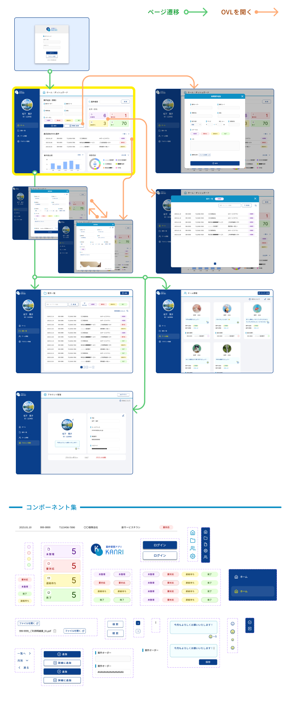

デザイン案件管理ダッシュボード
ー 現在・過去案件の可視化による、整頓された案件管理 ー
LP 2026.1
デザイン部で実際に感じていた業務課題をもとに制作した、デザイナー向け案件管理ダッシュボードの自主制作。
案件管理方法が社員ごとに異なり、案件を管理していないケースもある状況だったため、
自分自身が「本当に使いたい」と思える管理画面を設計した。
●制作範囲
提案 / 画面デザイン 1週間
●制作ツール
Figma
| 背景・課題 |
既存の案件管理システムには以下の課題があった。
|
| 目的 |
|
| ターゲット |
|
| 解決方針 |
|
| 情報設計 |
|



一覧を見る